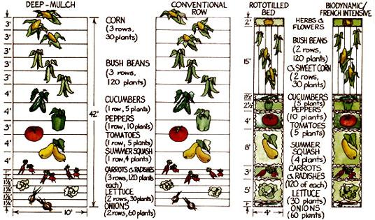

From Mother No. 92
Double-dug or rototilled bed? Straight rows or deep mulch? Which of these gardening methods is best?
Two summers ago, in 1984, our Eco-Village gardeners conducted an intriguing experiment: They grew the same vegetables (and identical numbers of each) using four different methods. The techniques they used in four minigardens were these:
BFI: the hand-worked, biodynamic/French intensive technique, in which the soil is first loosened to a depth of two feet with a spade and fork and then shaped into a four-foot-wide raised bed.
RB: the rototilled, raised-bed method, in which the entire area is rototilled and the loosened pathway soil spaded and raked up onto a four-foot-wide raised bed (then treated like the standard hand-dug biodynamic/French intensive garden).
CR: a conventional row design, in which the entire plot is rototilled, then planted in single rows with pathways in between.
DM: the deep-mulch technique, as popularized by Ruth Stout, in which the entire growing area is continuously covered with a generous layer of organic mulch. (To plant in such a garden, the mulch on top is temporarily brushed aside and the seeds or seedlings put into the lower, and more completely decomposed, layer.)
The results of this fourfold comparison, as reported by then head gardener Walker Abel, can help you decide which crop-raising method would be best in your own plot.
Each method can obviously be used to produce beautiful and bountiful vegetables. But for what it's worth, in our test, the BFI and RB areas were comparable: They yielded both the most and the healthiest vegetables. The CR garden produced substantially less food than did our "winners," and the DM plot fared the worst, with stunted growth and persistent insect problems. In fairness, though, let me say right away that a deep-mulch garden requires a few years to develop the mature compost layer that is essential to its maximum effectiveness. So that plot would probably perform better in subsequent seasons.
I don't want to put too much emphasis on the differences in harvest we obtained from the four plots. Indeed, the real significance of this experiment could be seen in the other striking differences between the four minigardens.
The most obvious difference between the two raised-bed plots and the other two gardens was size. We put the same number of plants of the ten most popular home-garden er's vegetables in each plot, yet the BFI and RB gardens each occupied a 4' X 42' bed, while the CR and DM gardens each took up a 10' X 42' area . . . two and a half times as much room! Such row gardens use as much as two-thirds of their area for pathways, while bed plots need just one-third of their area for that purpose. In an urban or suburban situation, where growing space is at a premium, this could be a critical difference.
The four methods vary in their potential to promote good, overall soil health. In the BFI bed, the earth was dug to a depth of two feet. The RB bed's soil was loosened about ten inches-the six-inch "reach" of the rotary tiller combined with about four inches of pathway dirt that was raked onto the bed. The CR garden was turned six inches down by the tiller. The radically different DM garden was never dug or tilled; however, it would work best if established over a soil that has previously been well worked and improved.
The virtue of a deeply worked soil was most noticeable during a heavy rain. The biodynamic/French intensive bed was relatively immune to erosion, no matter how heavy the rain. The rototilled, raised-bed plot was also quite erosion-resistant, but did remain soggy in its lower layers longer than the BFI bed. The conventional row garden definitely tended to puddle up and suffer runoff problems. The deep-mulch plot, though, showed no erosion effects: It soaked up water like a sponge.
Soil health was further promoted in the two raised-bed gardens by the fact that those beds were never stepped on, eliminating the root growth and drainage problems caused by soil compaction.
We worked the same amount of compost into each minigarden. Since the two raisedbed gardens were 168 square feet each and the other plots 420 square feet apiece, the beds received two and a half times as much compost per square foot as the row plots . . . resulting in a much more efficient use of compost. All that compost was readily available to the beds' plants; none of it was compacted in pathways, as was the case in the nonbed gardens. The benefit to the soil from this higher ratio of organic matter could make a significant difference over the years.
Of the four methods evaluated in this experiment, the DM system required the least time. Most of the work was done in the fall, when mulch materials were gathered and spread over the entire garden. There was no digging, weeding, or cultivating-tasks that require considerable time in other methods.
The other three methods, of course, require that the soil be worked each year. There did not seem to be a significant time difference between the two rototill methods, although the raised-bed garden did take a little more time, for constructing the bed and doing more hand-weeding.
The BFI method was clearly the most timeconsuming . . . the extra labor resulting, of course, from the need to hand-dig the two-foot-deep beds. We spent about eight hours digging the 168-square-foot bed in our minigarden's heavy clay soil. Two hours of that were spent on the initial double-digging, while six hours were required for tilthing (breaking up the soil clumps with a hand fork). The time involved would decrease in better-or previously hand-dug-soil.
Any of the four methods in our experiment will, if it includes adequate organic fertilization and proper care, be sustainable and lead to soil improvement. But there is little doubt in my mind that the hand-worked, biodynamic/French intensive method leads to the most rapid improvement in soil condition and the most profound changes over time. It can literally transform the nature of a soil. The depth to which the ground is worked, the fact that the beds are permanent and never compacted, and the concentration of amendments are all very beneficial to the soil. Even BFI's dense "equilateral triangle" planting system, which involves spacing plants so that their outside leaves just overlap and thus create a living mulch, helps to protect the soil surface from the' damaging effects of hot summer sun and concentrates the efforts of ground-loosening roots, as well.
The rototilled, raised-bed method approximates these effects but never reaches down to loosen the subsoil or break up any hardpan. Nevertheless, it will bring about a far greater and more rapid soil improvement than will a conventional rototilled garden, which will usually have no permanent distinction between vegetable area and pathway. Indeed, the downward motion of a tiller's tines can actually lead to the creation of a hardpan in the soil just at the bottom of its reach . . . diminishing drainage and blocking root movement. The pathways-as much as two-thirds of the garden, remember-will be walked upon, pounded by rains, and baked by the sun, and thus those areas will have little chance to improve.
The deep-mulch system can, in principle, substantially enrich the soil. Essentially, it imitates the natural process of the forest, where fallen leaves gradually break down to a rich, black humus. People tell of long-established DM gardens that have soil-under the mulch-so loose you can push your hand down into it. The drawback is time: It may take years for the soil to become significantly developed.
Alan Chadwick, founder of biodynamic/ French intensive gardening, once said, "The object of gardening is not production-it is happiness in God's Creation." He meant not only the happiness of the gardener as he or she works in the air and sun or enjoys the fruit of those labors, but also the happiness (or well-being) of the soil, the plants, and the other living creatures making up the plot's "ecosystem." The gardener expresses the love and caring that he or she feels for the earth and all life.
It is clearly possible to have this same attitude while using a gardening method other than BFI. This technique, however, encourages a caring philosophy every step of the way. It's built right into the method-from the intimate connection with the soil that comes through hand-digging, to the sowing of seeds in flats and their gentle transplanting, to the beauty of the livingmulch concept.
That-rather than efcient use of space and increased yields-is the major reason why we choose to use the biodynamic/French intensive method in our main gardens at MOTHER's Eco-Village.
|
 |
|
|